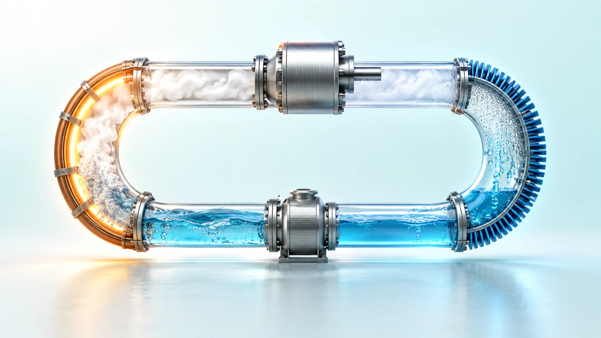
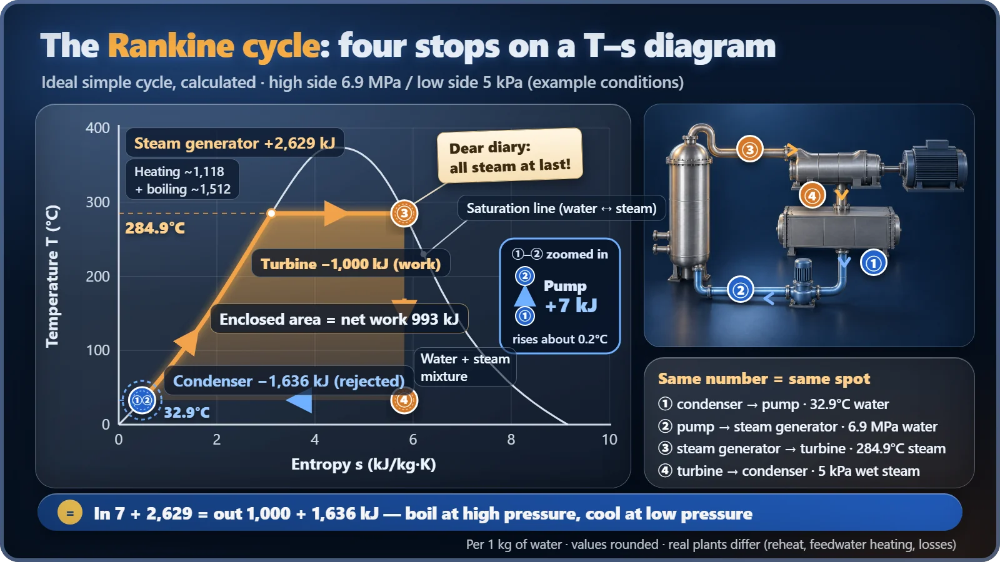
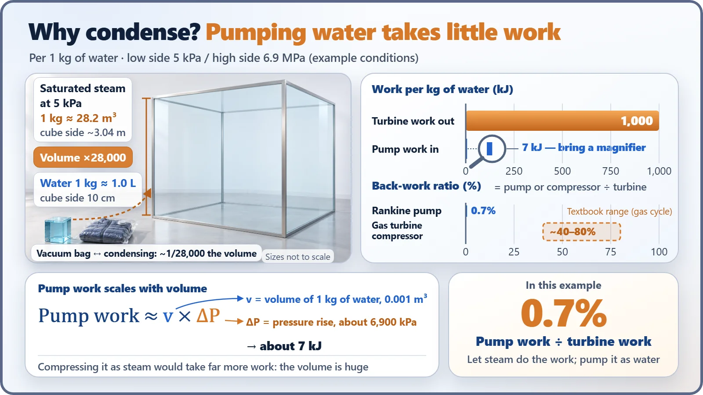

Plant Operation, Control & the Grid · 232
Four Stops on a Round Trip for 1 kg of Water — The Rankine Cycle That Drives a Nuclear Plant's Steam
Pump, boil, expand, condense: the steam loop behind every nuclear plant's turbine, and why it bothers to turn steam back into water.

The Rankine cycle is the closed loop that turns reactor heat into turbine work: pump the water, boil it, let the steam spin a turbine, then condense it back into water. Condensing looks wasteful, but pumping liquid water takes only about 0.7% of the turbine's work in this example, which is why power plants bother to boil and cool the same water over and over. [4]
A diary from the secondary loop
I am 1 kg of water circulating in the secondary system of a nuclear power plant. Today I make my four stops again. At the first stop I get squeezed, at the second I boil, at the third I pour out everything I've got, and at the fourth I turn back into water. Then I set off again.
If a lump of water kept a diary like this, the name of its route would be the Rankine cycle, the steam loop named after the 19th-century Scottish engineer William Rankine. In one sentence: a closed loop that pumps water to high pressure, boils it into steam, spins a turbine with that steam, and then cools it back into water. Coal plants make electricity with this loop, and so do nuclear plants. The only difference in a nuclear plant is that the fire boiling the water is a reactor.
Where does the trip take place?
First, the stage. Most nuclear plants in South Korea are pressurized water reactors (PWRs), which have two separate water loops. Water in the primary system, which passes through the reactor, is kept at about 153 atmospheres (15.5 MPa), so it doesn't boil even above 320°C. This hot water flows through thin tubes inside the steam generator and hands only its heat to different water outside the tubes. The two never mix. [1]
Our diarist, 1 kg of water, lives outside those tubes, in the secondary system. That's where the Rankine cycle runs.
Four stops, followed by the numbers
Let's calculate the ideal case under conditions close to a real design (high side 6.9 MPa, low side 5 kPa). The trip goes like this. [3]
① → ② Pump: getting squeezed. Water at 33°C, fresh out of the condenser, is pushed up to about 68 atmospheres (6.9 MPa). The work this takes is a mere 7 kJ per kilogram of water.
② → ③ Steam generator: boiling up. Here the water takes in 2,629 kJ: about 1,118 kJ to heat the 33°C water to its boiling point, and about 1,512 kJ to turn it into steam at that boiling point (the two add up 1 off because of rounding). But the boiling point isn't 100°C; it's 284.9°C. Under high pressure, water only boils at a higher temperature.
③ → ④ Turbine: pouring out the effort. The high-pressure steam expands as it pushes the turbine blades, delivering about 1,000 kJ of work. The generator turns that rotation into electricity.
④ → ① Condenser: back to water. The spent steam is cooled by cooling water such as seawater and condensed back into water, releasing 1,636 kJ. At 5 kPa, about one-twentieth of atmospheric pressure, water boils and condenses at 32.9°C, so steam turns back into water even at a lukewarm temperature.

What went in (7 + 2,629) matches what came out (1,000 + 1,636) exactly. Energy doesn't disappear.
One formula: how much work is left over?
Net work = turbine work − pump work
Thermal efficiency = net work ÷ heat received in the steam generator
Plug in the numbers and you get (1,000 − 7) ÷ 2,629 ≈ 38%. Real nuclear plants, with many losses stacked up, land at roughly one-third, and where the rest of the heat goes is a story worth telling separately. [3]
Why bother boiling and cooling: the vacuum bag in your suitcase
Here's the natural question. Why go to the trouble of turning hard-won steam back into water? Why not just compress the steam and reuse it?
Think about packing for a trip. A puffy down jacket fills your suitcase if you just stuff it in, but put it in a vacuum storage bag, squeeze out the air, and it shrinks to almost nothing and travels easily. Take it out at your destination and it puffs right back up.
Water works the same way. One kilogram of water that has fully turned to steam at 5 kPa takes up about 28 m³, enough to fill a room 3 m on each side. Condense it into water and it shrinks to about 1 liter, a whopping 1/28,000 of the volume. The work a pump needs is roughly "volume × pressure raised", so pressurizing water, with its tiny volume, takes very little work. That's why pump work comes to just 0.7%, not even 1% of the turbine work.
What if we had to compress it as steam? In a gas turbine, which compresses air, the compressor takes back a large share of the work the turbine produces, often around half. Phase change is a clever trick that nearly wipes out this "payback". [4]

There's a bonus, too. While water is boiling and while steam is condensing, the temperature stays constant. So the temperature at which heat comes in can be pinned high, and the temperature at which heat goes out pinned low. Condensing also makes the pressure at the turbine exit drop sharply, letting the steam do work right to the end. That "vacuum" story is a topic of its own.
Four easy mix-ups
- Does the reactor make electricity? The reactor is where heat comes from. Electricity is the job of the turbine and generator.
- Is it the same as the Carnot cycle? The Carnot cycle is an imaginary loop that shows the highest efficiency theoretically possible between two temperatures. Between the same 284.9°C and 32.9°C, that ceiling is about 45%. The Rankine cycle is the practical version, refined so a real machine can run it: a bit lower, but it actually works.
- Is the condenser the cooling tower? The condenser is a heat exchanger right below the turbine that turns steam into water. A cooling tower is a separate facility that dumps the cooling water's heat into the air, and South Korea's seawater-cooled nuclear plants usually don't have one.
- Is cooling just a waste? Without a cold side, the cycle doesn't run. In fact, plants are designed to trip the turbine automatically if the condenser vacuum gets badly worse. [2]
Real plants add a few things to this basic form. For example, they preheat the feedwater with steam drawn off the turbine, so the APR1400 sends water into its steam generators at about 232°C. Even so, the skeleton is still the same four stops. [1] [2]
What the trip of 1 kg of water teaches
When you wonder why a nuclear plant is designed the way it is, the Rankine cycle is the first key. Boil at high pressure, cool at low pressure, pump while it's water, and make it work while it's steam. That's why 1 kg of water keeps making its four stops today.